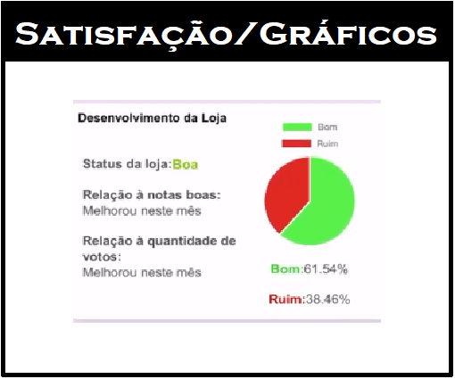
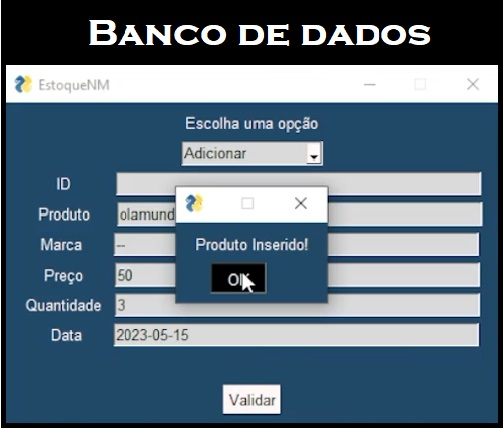
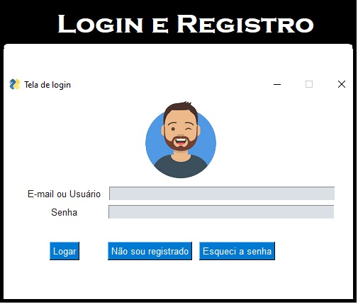
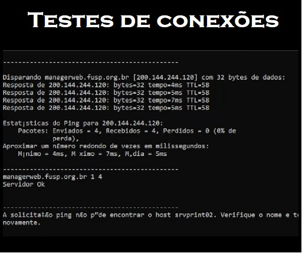
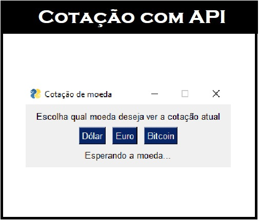
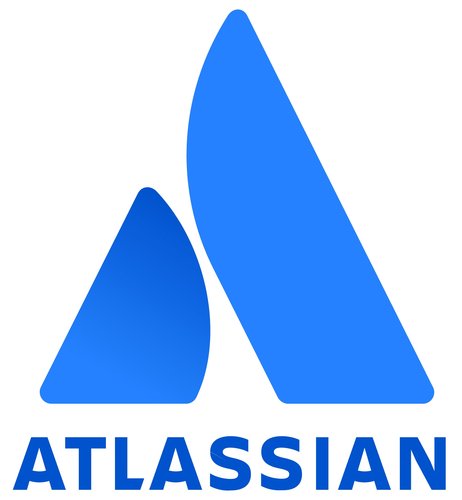
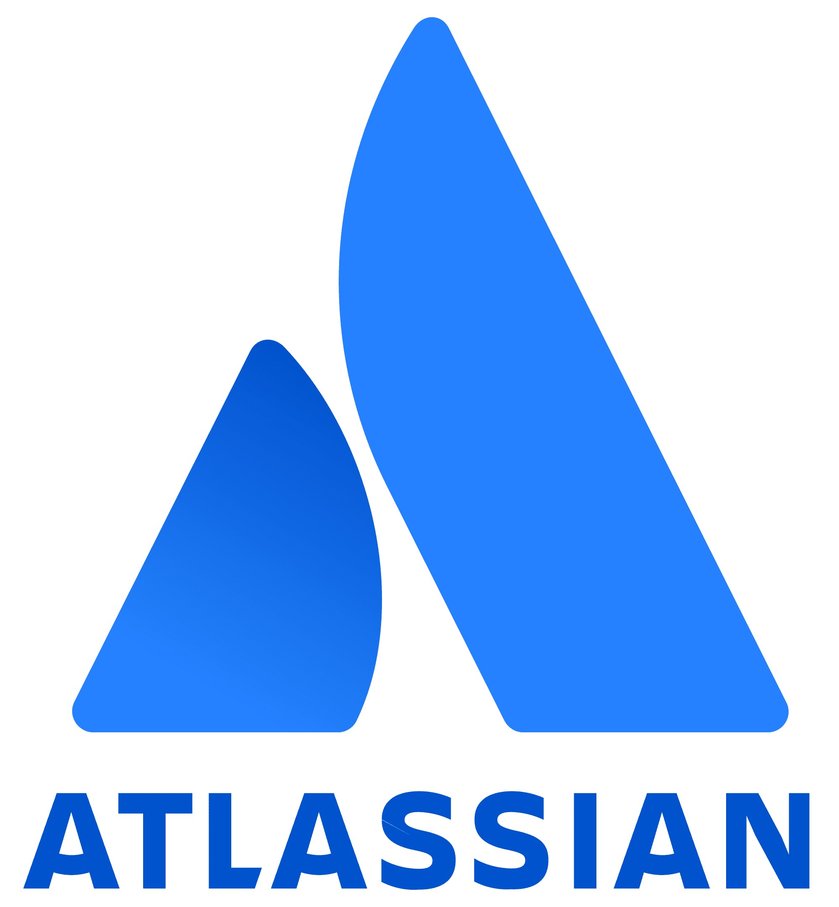

Projetos
Os projeto Monitoramento de Conexão de Servidores e Automação Página FUSP,
foram os que apliquei na prática, os outros foram desenvolvidos para conhecimento próprio.
    


 

Estou fazendo um sistema automotivo, com base em ajudar
qualquer tipo de cliente e também lojas. Como sistema de delivery, guincho, gestão de veículos, prestação de socorro, dicas de mecânica (comunidade) e entre mais.
Sistemas em criação
UniFECAF - Presencial - Tecnólogo
8 de 2023 - Termina em 12 de 2025
Curso de Análise e Desenvolvimento de Sistemas - Cursando
Curso de Python 3 do Básico Ao Avançado (com projetos reais) - Cursando
Curso de Luiz Otávio Miranda UDEMY
Curso básico de Redes de Computadores - Fundação Bradesco - Concluído
GitHub --
Linkedin
Endereço: Rua Benedita Aparecida Nogueira, 81. Taboão da Serra, São Paulo - 06757-260
Número de telefone: +55 (11) 98681-5754
Email: ala.pereiradocavalcante@gmail.com
Email secundário: ala.pereiradocavalcante@hotmail.com